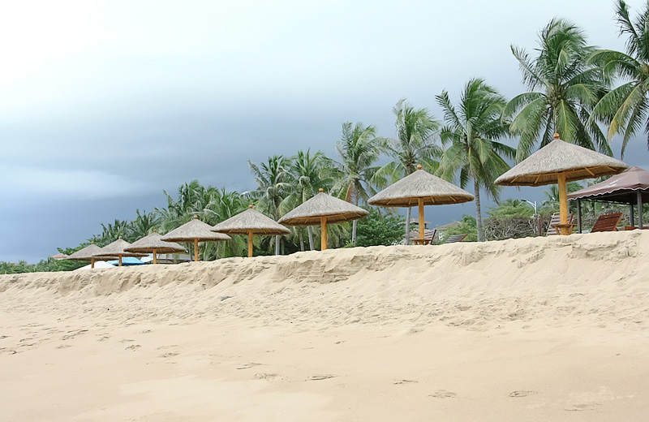
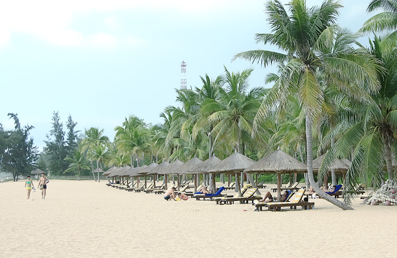
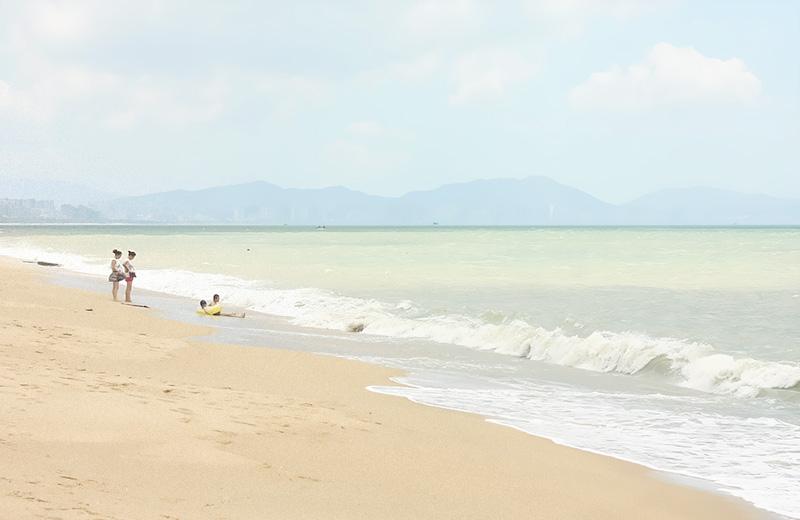
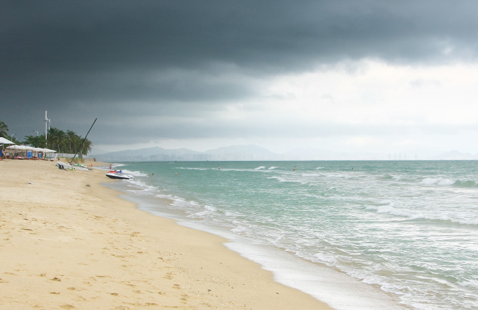
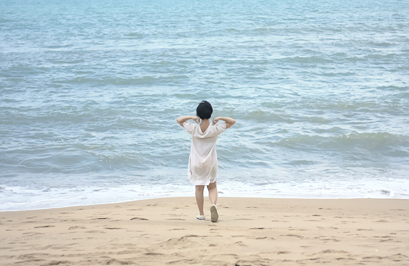
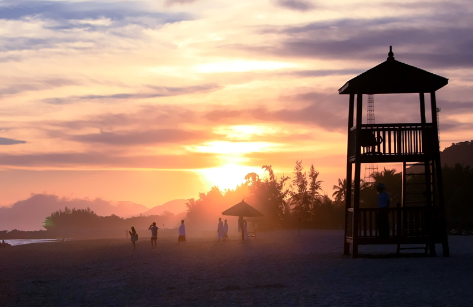
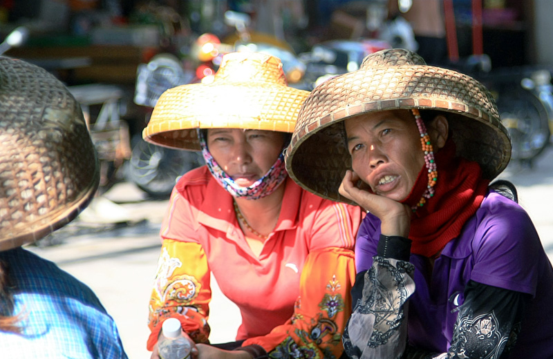

原以为三亚既然已是著名旅游城市，应该还是建设得不错，没想到在市区转了一天感觉很失望。倒不是要求它如大城市一般繁华，但主要像公交等城市基础建设都仍是非常不完善。说到吃海鲜，也不比我老家好。倒是蓝天和沙滩还是挺不错的。





回来查了查原来三亚才几十万人，的确很小。但因为独特的资源，搞得如今当地房价那么高。外面的有钱人想进驻，当地年轻人却想离开。其实感觉告诉我住在那并不好，但有钱人也说了：买房不是要定居，只是为了每年度假。这和当地光鲜的酒店与破旧的城市建设形成的强烈反差带给我的感受一样，这种反差让我没有对三亚产生留恋与不舍。

